How to use the prototype: registering instruments, opening tests, recording OIML R 76 observations, closing and approving reports, and issuing certificates of conformity.
NAWI TestBench is a web application for laboratories that evaluate non-automatic weighing instruments (NAWIs) under OIML Recommendation R 76. The engineer records what the indicator shows; the software picks the permissible-error band for every load, applies the changeover-point correction and the zero-error correction, judges every test against its R 76 criterion, and produces the standardised report and, when everything passes, a certificate of conformity.
Everything the software knows about R 76 is stored as data in a versioned rule-set file. Every report remembers which rule set it was judged under, so a revised Recommendation becomes a new file, not new software.
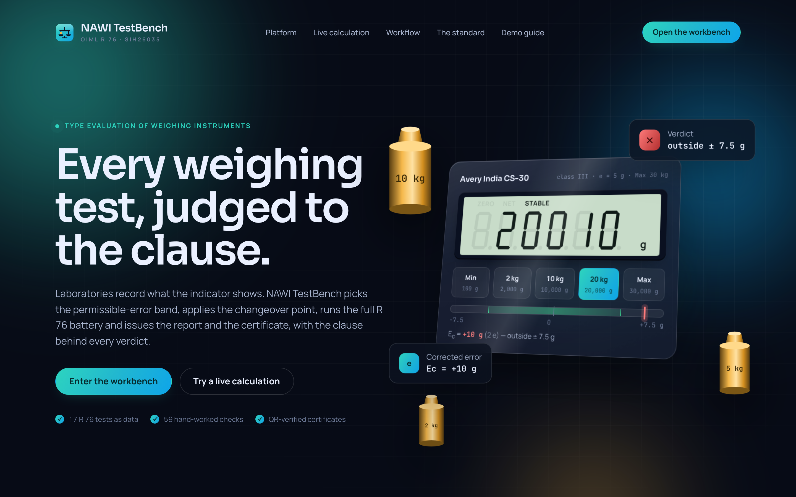
The prototype runs on any computer with Node.js 20 or later. PDF export additionally needs Google Chrome, Chromium or Microsoft Edge installed; without one, HTML and Word exports still work.
cd ~/dev/nawi npm install # first time only npm run seed # first time only: two worked examples and the demo accounts npm start # then open http://localhost:4178
Leave the terminal window open while you use the software; closing it stops the server. To run it permanently, see docs/deployment.md.
npm start again. If it reports that the port is in use, another copy is already running; stop that one first or start this one with PORT=5000 npm start.Open http://localhost:4178/login. Four demonstration accounts exist after seeding. Click a username on the login page to fill the form.
| Username | Password | Role | What the role can do |
|---|---|---|---|
viewer | viewer123 | Viewer | Read every test, instrument and report; download exports. Cannot change anything. |
engineer | engineer123 | Engineer | Everything a viewer can, plus register and edit instruments, open tests, record observations, environment readings, checklists and attachments, close and reopen reports. |
approver | approver123 | Approver | Everything an engineer can, plus approve and sign closed reports, return them to the engineer, withdraw approvals. Approval issues the certificate. |
admin | admin123 | Admin | Everything, plus the Users page: create accounts, change roles, disable accounts, reset passwords. |
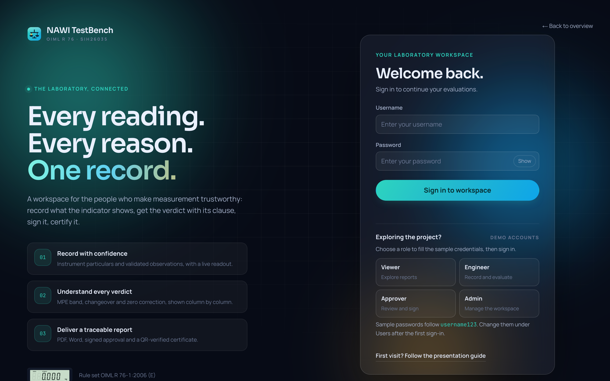
admin, open Users and use “reset password” on each account.| Address | Page | Who | Purpose |
|---|---|---|---|
/ | Overview | Anyone | Explains the method, the battery and the workflow; interactive indicator. |
/app | Workbench | Signed-in users | Dashboard, Tests, Instruments, New test, Users. This is where all work happens. |
/standards | The standard | Anyone | Everything the engine knows about R 76, read live from the rule set, plus a permissible-error calculator. |
/verify/<certificate no.> | Verify | Anyone | Confirms whether a certificate number is genuine and still valid. |
Inside the workbench, the dark rail on the left switches between views. The small readouts at the bottom of the rail always show how many tests are in progress, awaiting approval and certified.
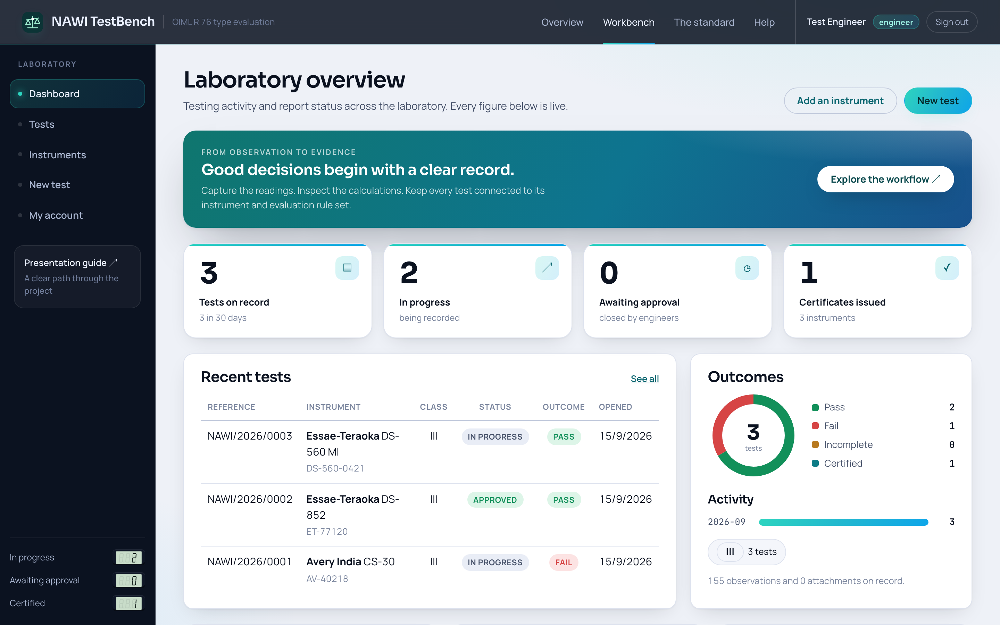
An instrument is registered once and reused in every test made on it. Open Instruments in the rail and press Add an instrument.
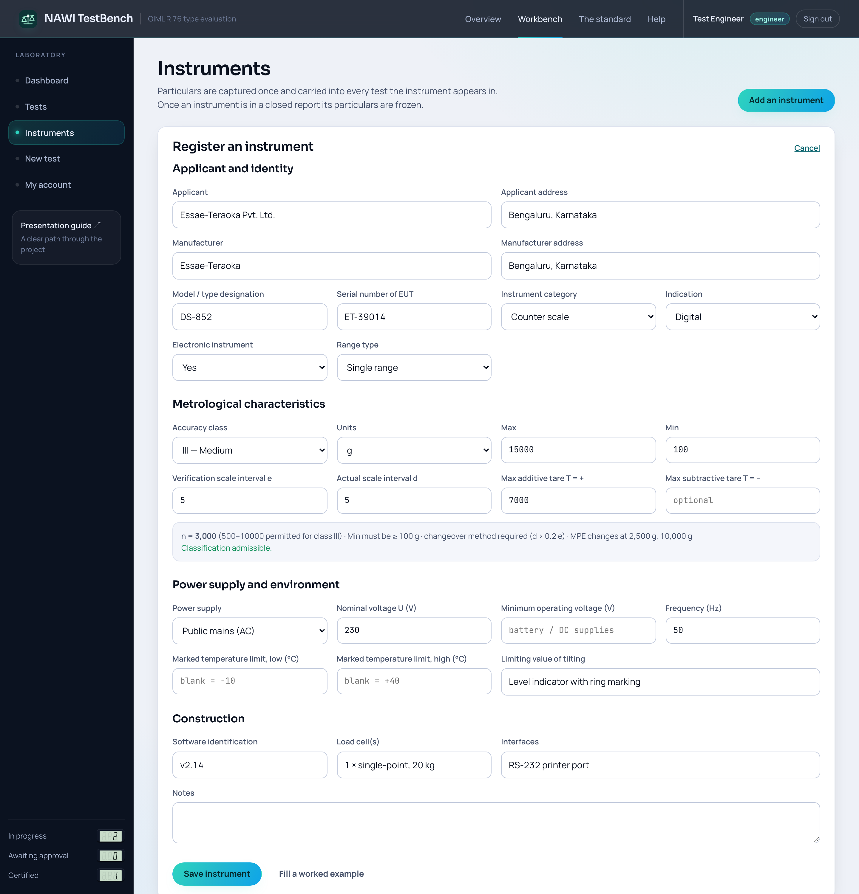
| Applicant, applicant address | The company applying for approval. Printed on the report and certificate. Leave blank if the manufacturer is the applicant. |
| Manufacturer, manufacturer address | Required. Printed as the manufacturer's mark. |
| Model / type designation, Serial number of EUT | Required. EUT is the equipment under test. |
| Instrument category | Counter scale, platform scale, weighbridge and so on. Descriptive only. |
| Indication, Electronic instrument | Digital or analogue; electronic yes or no. Warm-up, voltage and span-stability tests apply to electronic instruments only. |
| Range type | Single range, multi-interval or multiple range. The prototype evaluates single-range instruments fully; the others are recorded for the report. |
| Accuracy class | I, II, III or IIII. Decides the MPE bands and which tests apply. |
| Units | g or kg. Every load and reading for this instrument is entered in this unit. |
| Max, Min | Maximum and minimum capacity. |
| Verification scale interval e, Actual scale interval d | d is what the display steps in; e is the interval used for classification. Usually equal on class III instruments. |
| Max additive / subtractive tare | T = + and T = − from the data plate. Used to check tare entries and to suggest the eccentricity load. |
| Power supply, nominal voltage, minimum operating voltage, frequency | Decide the voltage limits for the voltage-variation test (3.9.3). Mains: 0.85 U to 1.10 U. External or battery supplies need the minimum operating voltage. |
| Marked temperature limits | Leave blank for the default −10 / +40 °C. If the instrument is marked with special limits, enter both; class III needs a span of at least 30 °C. |
| Limiting value of tilting | How the tilt limit is defined (level indicator, tilt sensor, or 50/1000). Printed with the tilting test. |
| Software identification, load cells, interfaces, notes | Printed in the general-information block of the report. |
The grey strip below the metrological fields shows n = Max / e and whether it lies in the range Table 3 permits for the class, the lowest Min allowed, whether the changeover method is required (d > 0.2 e), and any findings. An instrument can be saved with findings, but findings block the certificate, so fix them if they are data-entry mistakes.
Click any row in the instrument list to open its detail panel with all particulars and its test history. Edit particulars is available until the instrument appears in a closed or approved report; after that it is frozen so old reports stay truthful. New test on this instrument opens the New test form with the instrument pre-selected.
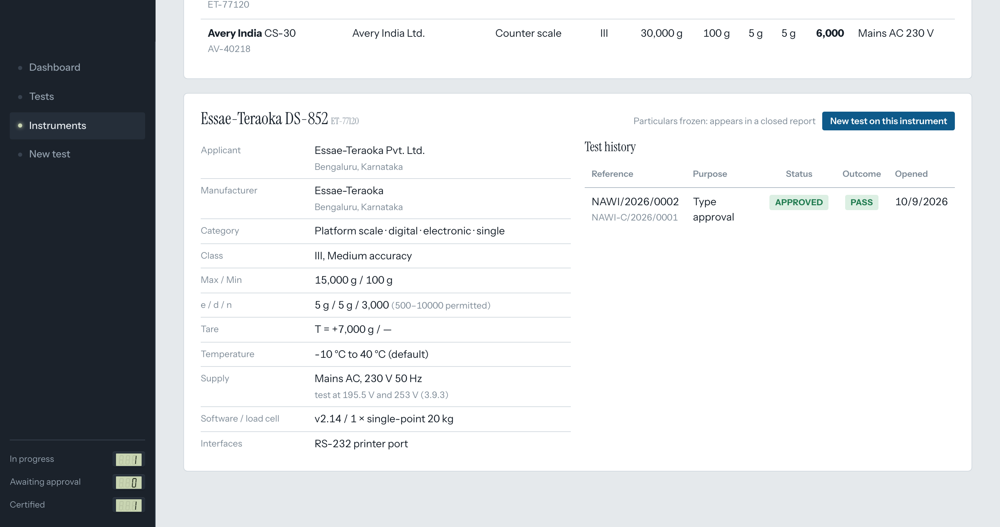
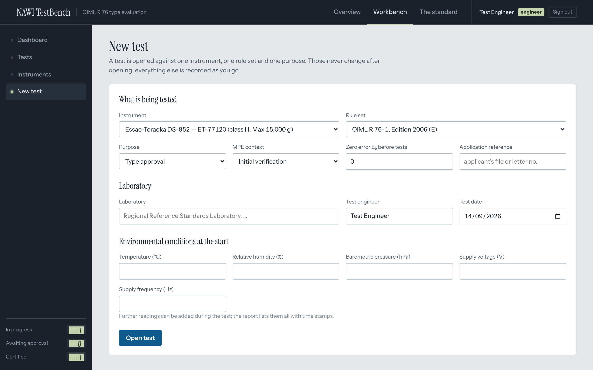
| Instrument | Pick the registered instrument. |
| Rule set | The edition of R 76 to judge against. Fixed once the test is opened. |
| Purpose | Type approval requires the full battery of 17 tests. Verification requires the six metrological tests and the markings checklist. |
| MPE context | Initial verification uses the Table 6 limits; In service doubles them (3.5.2). |
| Zero error E₀ before tests | The zero error determined at no load before testing. Every corrected error subtracts it unless a point records its own E₀. |
| Application reference | The applicant's file or letter number, printed on the report. |
| Laboratory, Test engineer, Test date | Printed on the report and certificate. The engineer defaults to your name. |
| Environmental conditions at the start | Optional; saved as the first environment reading. |
Press Open test. A reference like NAWI/2026/0003 is assigned and the report workspace opens.
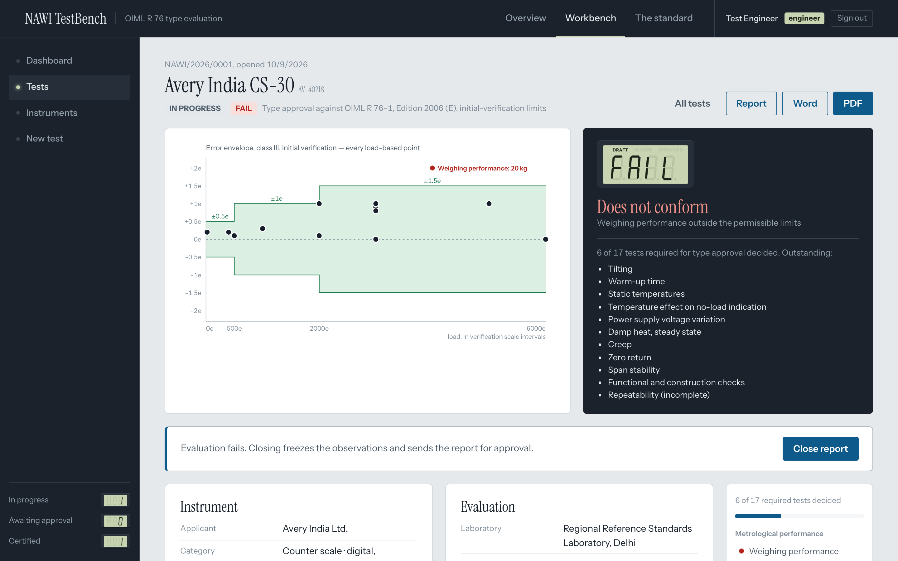
From top to bottom:
Everything is recalculated every time an observation is saved or removed. There is no “calculate” button.
Open a test block and use the Record an observation form at its bottom. Fields common to the load-based tests:
| Point / Position / Run | A label for the report: “10 kg”, “Segment 2”, “Run 3”. Eccentricity offers the four segments; repeatability suggests the next run number. |
| Direction | Increasing or decreasing load (A.4.4.1 asks for both). |
| Load | The test load applied, in the instrument's unit. |
| Tare | Tare test only: the tare value in use. The net load is judged. |
| Indication | What the display shows. |
| Added until display stepped, ΔL | Changeover-point method: the small weights added until the display moved up one interval. Leave blank to use the raw reading. Required in spirit when d > 0.2 e. |
| Zero error E₀ at this point | Overrides the session E₀ for this point. |
| Remark | Free text printed under the row in the report. |
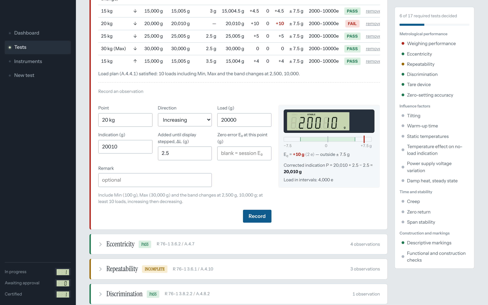
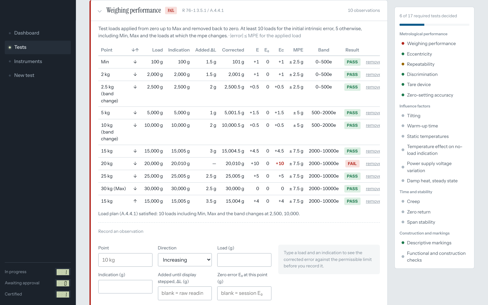
P = I + ½e − ΔL indication before rounding (blank ΔL → P = I) E = P − L error of indication Ec = E − E0 corrected error, compared with the MPE for L MPE from Table 6: ±0.5 e, ±1 e or ±1.5 e depending on L / e and the class; × 2 in service
Each test block explains its criterion and, where the standard prescribes them, the loads or sequence to use. This table summarises what to enter.
| Test (clause) | Applies to | What to record | How it is judged |
|---|---|---|---|
| Weighing performance (3.5.1, A.4.4.1) | All | At least 10 loads (type approval) or 5 (verification) from zero to Max and back, including Min, Max and the loads where the MPE changes. The form lists those loads for this instrument. | |Ec| ≤ MPE for every point. The load plan under the table says what is still missing. |
| Eccentricity (3.6.2, A.4.7) | All | One third of (Max + T) on each of the four segments. Choose the segment from the list. | |Ec| ≤ MPE at each segment. |
| Repeatability (3.6.1, A.4.10) | All | Type approval: two series, about 50 % of Max and near Max, 10 weighings each when Max < 1000 kg. Verification: one series near 0.8 Max, 3 runs (III, IIII) or 6 (I, II). | Spread of the series ≤ MPE at that load; incomplete until the run count is met. |
| Discrimination (3.8.2.2) | d ≥ 5 mg | Load, indication before, indication after gently adding 1.4 d. | Indication must change by at least 1 d. |
| Tare device (3.5.3.3, 4.6.3) | All | Gross load, tare value, indication. | Net error ≤ MPE for the net load. |
| Zero-setting accuracy (4.5.2) | All | Indication after zero setting at nominal 0. | |error| ≤ 0.25 e. |
| Tilting (3.9.1.1, A.5.1) | II, III, IIII | Record the no-load indication in the reference (level) position first. Then in each tilted position: no load, self-indication capacity and Max. | No-load shift ≤ 2 e (class II exempt); loaded |Ec| ≤ MPE. |
| Warm-up time (5.3.5, A.5.2) | Electronic | Load near Max at 0, 5, 15 and 30 min after switch-on, each with its own E₀. | |Ec| ≤ MPE at every time; incomplete until all four are recorded. |
| Static temperatures (3.9.2, A.5.3.1) | All | Weighing points with the chamber temperature as the condition: reference, high, low, 5 °C if low ≤ 0 °C, reference. The form suggests the temperatures for this instrument. | |Ec| ≤ MPE under every condition; at least four conditions. |
| Temperature effect on no-load (3.9.2.3) | All | Zero indication at each temperature, in the order tested. | Change ≤ 1 e per 5 °C (per 1 °C for class I) between consecutive temperatures. |
| Voltage variation (3.9.3, A.5.4) | Electronic | Points at 10 e and between ½ Max and Max, with the supply voltage as the condition: lower limit, nominal, upper limit. The limits are computed from the instrument's supply type. | |Ec| ≤ MPE at all three conditions. |
| Damp heat (B.2) | Not class I; not class II with e < 1 g | At least five loads under each of: reference 50 % RH, high temperature 85 % RH, reference again. | |Ec| ≤ MPE everywhere; three conditions. |
| Creep (3.9.4.1, A.4.11.1) | II, III, IIII | Load near Max; indication on loading, at 15 and 30 min. Continue to 4 h only if the 30-minute limits are missed. | Drift ≤ 0.5 e in 30 min and ≤ 0.2 e between minute 15 and 30; otherwise drift over 4 h ≤ MPE. |
| Zero return (3.9.4.2) | II, III, IIII | Zero before and after 30 min under a load near Max. | Deviation ≤ 0.5 e. |
| Span stability (5.3.3, B.4) | Electronic, not class I | At least eight measurements near Max spread over up to 28 days, same weights. Use the date as the label. | Each |Ec| ≤ MPE; max − min of the errors ≤ max(0.5 e, 0.5 MPE). |
| Descriptive markings (7.1) | All | Checklist, see section 11. | Every compulsory item present. |
| Functional checks (4, 5.3) | Type approval | Checklist, see section 11. | Every applicable item satisfied. |
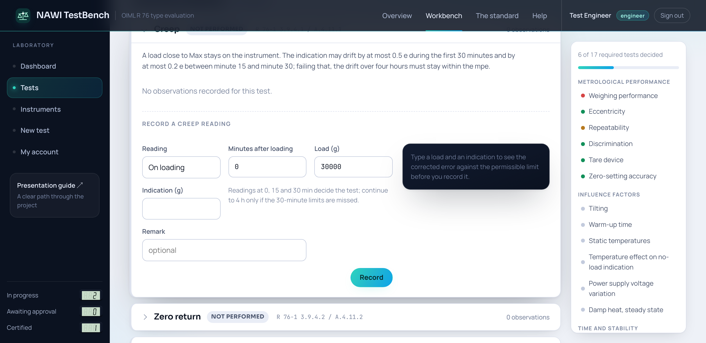
Tests that do not apply to the instrument (for example creep on a class I balance) show N/A with the reason and need no entry.
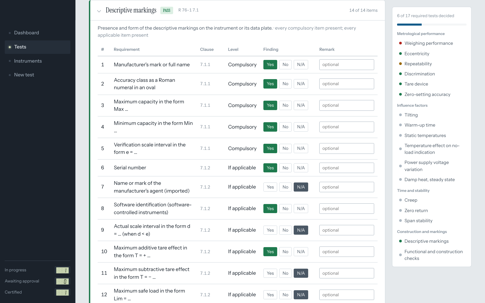
The two construction tests are inspections rather than measurements. For every item choose Yes, No or N/A and add a remark if useful. Rules:
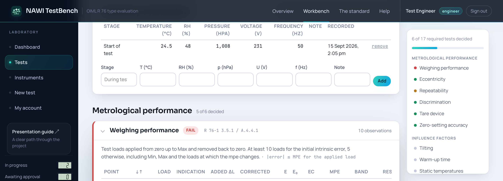
Record temperature (°C), relative humidity (%), barometric pressure (hPa), supply voltage (V) and frequency (Hz) with a stage label such as “Start of test”, “During test”, “End of test” or “Temperature chamber”. Each reading is time-stamped. A reading outside the instrument's temperature limits or supply limits is saved with a warning. All readings are printed in section 2 of the report.
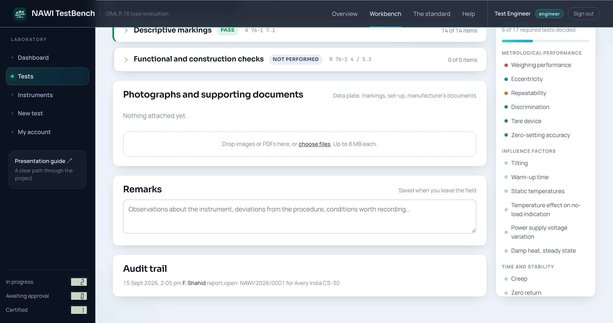
draft --close--> closed (awaiting approval) --approve--> approved (+ certificate if eligible) ^ | | +----- reopen -----+---- return to engineer ---------------+---- withdraw and reopen (approver)
NAWI-C/2026/0001 is issued and the Certificate button appears./verify/<certificate number> to confirm that the certificate exists and is current. Withdrawing the approval marks it as withdrawn.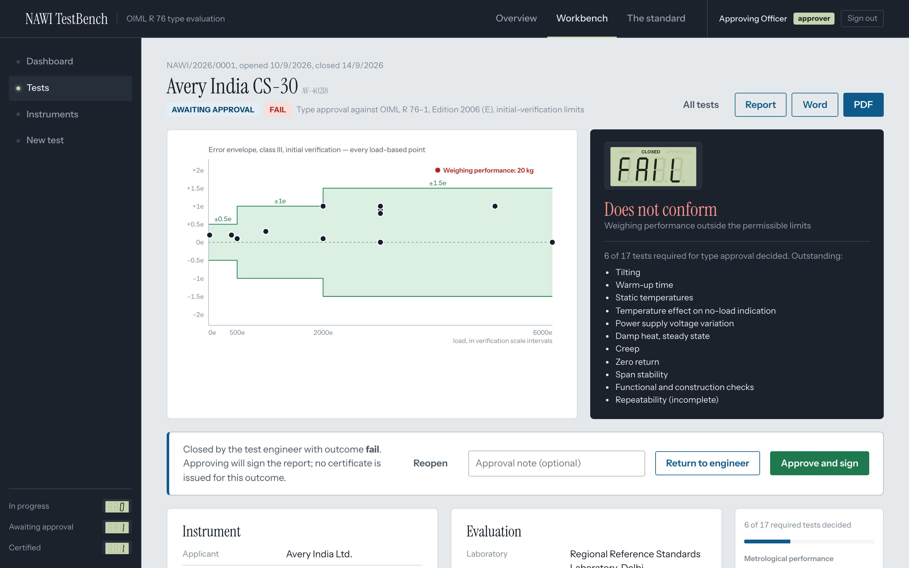
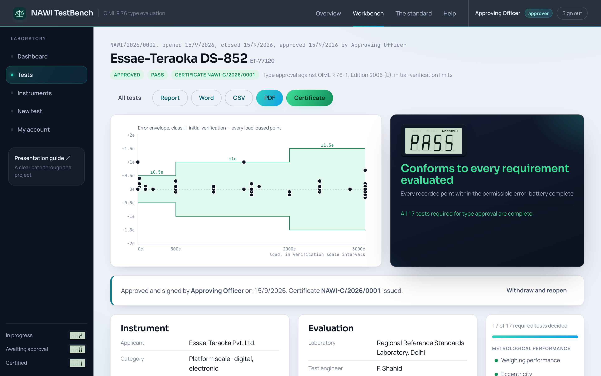
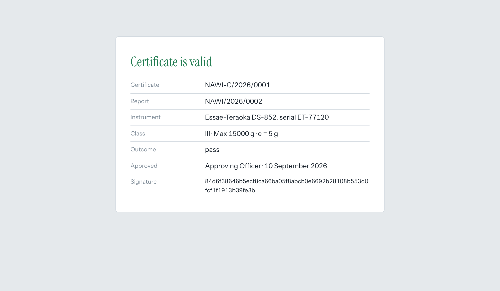
| Button / address | Format | Use |
|---|---|---|
| Report | HTML in a new tab | Quick review or printing from the browser. |
| PDF, A4 | The standardised test report for the file and for the applicant. Needs Chrome/Chromium on the server; otherwise the HTML opens instead. | |
| Word | .docx | Editable copy of the same report for laboratories that add their own cover pages. |
| Certificate | PDF, one page | Certificate of conformity, only after approval of a passing report. |
/api/sessions/<id>/report.json | JSON | Raw observations, checks, environment and the full evaluation, for integration. |
The report follows the R 76-2 structure: general information concerning the type, evaluation particulars and laboratory conditions, summary of results, test results by group with every column of the arithmetic, remarks, photographs, signatures, digital signature and audit trail.
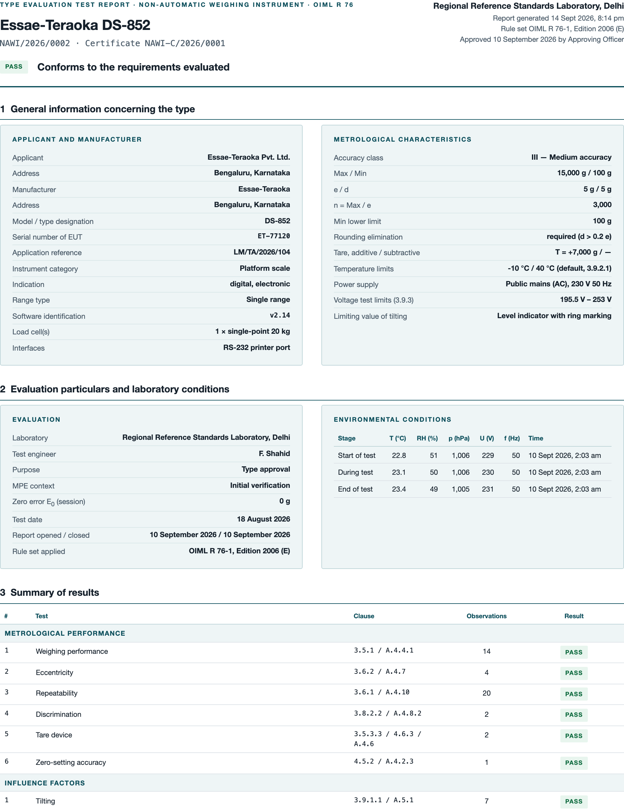
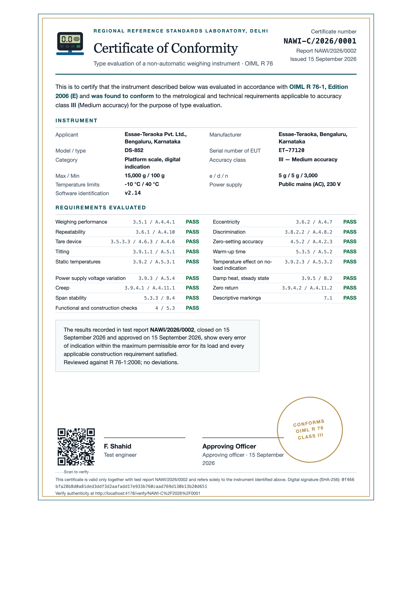
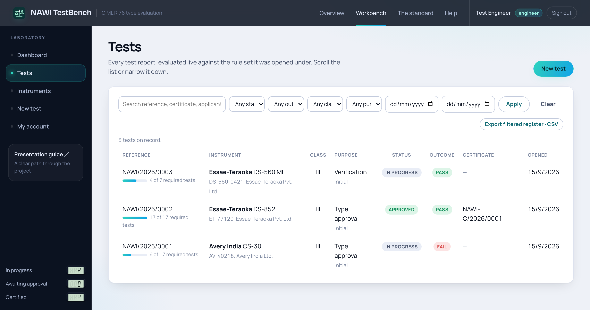
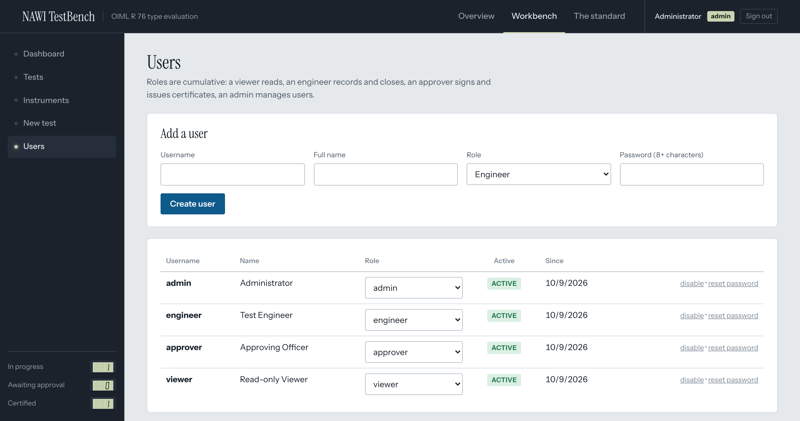
Admins create accounts with a username, full name, role and a password of at least eight characters, change a role from the drop-down, disable or enable an account, and reset passwords. Passwords are stored as scrypt hashes; sessions are HttpOnly cookies that expire after 12 hours.
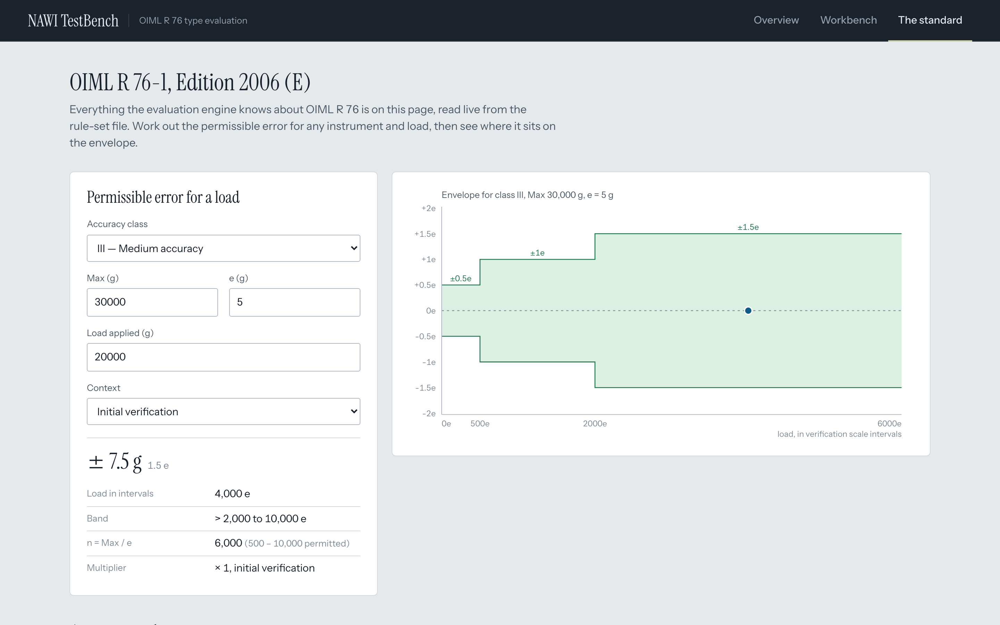
Use the calculator at the top to find the permissible error for any class, Max, e, load and context, and see where the load sits on the envelope. Below it are the accuracy-class table, the MPE bands, and every test with its rule, clause and whether type approval or verification requires it. This is the quickest way to answer “why did that point fail?”.
Class III counter scale, Max 30 kg, e = d = 5 g, initial verification. At 20 kg (4000 e, band above 2000 e) the MPE is 1.5 e = 7.5 g. The display reads 20 010 g with no changeover recorded, so Ec = +10 g and the point fails; the whole evaluation therefore fails while the other nine weighing points, eccentricity, discrimination, tare, zero and the markings checklist pass. Repeatability is incomplete because only three of ten runs are recorded. Use this report to try recording, the live readout, closing and returning.
Class III platform scale, Max 15 kg, e = d = 5 g. All 17 tests recorded and passing, closed, approved and signed, certificate NAWI-C/2026/0001 issued. Use it to see a complete report, the Word and PDF exports, the certificate and the verify page. As an approver you can withdraw and reopen it, then close and approve it again to watch a certificate being issued.
| Symptom | Cause and fix |
|---|---|
| localhost:4178 does not open | The server is not running. Run npm start in ~/dev/nawi and keep that window open. |
| “listen EADDRINUSE” on start | Another copy is running. Use it, or stop it, or start with PORT=5000 npm start. |
| Sent back to the login page | The 12-hour session expired. Sign in again; you return to the same report. |
| PDF button opens the HTML report instead | No Chrome, Chromium or Edge found on the server. Install one or set CHROME_PATH. Word export always works. |
| “this action needs the engineer role” | You are signed in as a viewer. Sign in with an account that has the right role. |
| Record is refused | Read the message under the form; it names the field. Errors are metrological (load above Max, tare above T, missing time) and must be corrected. |
| A test shows N/A | It does not apply to this instrument's class or type; nothing to record. |
| Certificate button missing on a passing report | It appears only after approval. Check the outcome panel: every required test must be decided and the instrument must have no classification findings. |
| Want a fresh database | Stop the server, delete nawi.db, nawi.db-wal and nawi.db-shm, run npm run seed, start again. |
| NAWI | Non-automatic weighing instrument: one that needs an operator during weighing (shop scales, platform scales, weighbridges). |
| Max, Min | Maximum and minimum capacity. Results below Min are not subject to the MPE. |
| e | Verification scale interval: the interval used for classification and for expressing the MPE. |
| d | Actual scale interval: what the display steps in. d ≤ e. |
| n | Max / e, the number of verification scale intervals. Table 3 limits it per class. |
| MPE | Maximum permissible error: ±0.5 e, ±1 e or ±1.5 e depending on the load band; doubled in service. |
| Changeover point | The load at which a digital display steps to the next value; used to recover the indication before rounding (P = I + ½e − ΔL). |
| E, E₀, Ec | Error of indication; zero error determined before the measurement; corrected error Ec = E − E₀, the value compared with the MPE. |
| Type approval / Verification | Type approval evaluates a design with the full battery; verification checks an individual instrument with the metrological tests. |
| Initial verification / In service | The two MPE contexts of 3.5.1 and 3.5.2. |
| Rule set | The JSON file holding every constant of an R 76 edition. Reports remember which one they were judged under. |
NAWI TestBench, prototype for Smart India Hackathon 2026, problem statement SIH26035 (Department of Consumer Affairs). Every constant traces to OIML R 76-1:2006 (E); report layout after R 76-2:2007 (E).